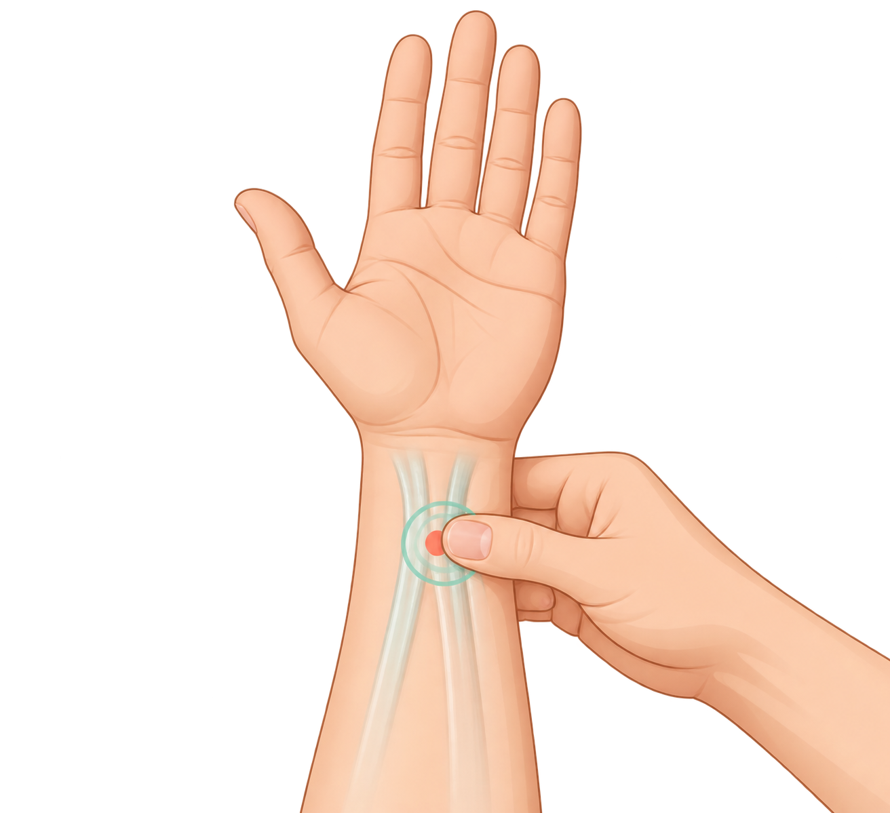
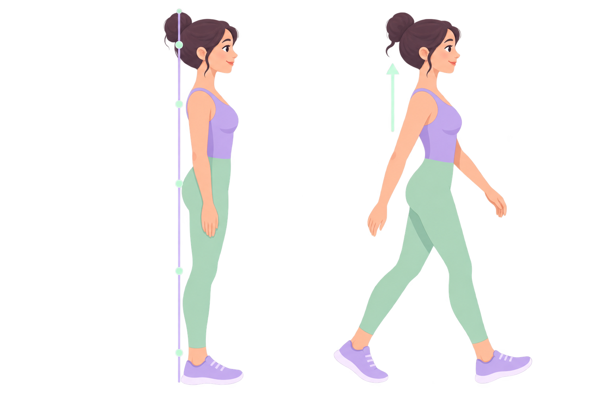

01심호흡 유도
4초 들이마시기 → 6초 내쉬기
사람처럼 따라 하는 호흡
코로 4초 들이마시고, 입으로 6초 내쉬며 그림의 움직임을 따라 해보세요.
준비됨
EMERGENCY MODE · 01
당황하지 마세요.
가까운 화장실을 찾는 동안 몸과 마음을 안정시키는 순서를 안내합니다.
오른쪽 지도에서 현재 위치 기반 화장실을 바로 찾아보세요.
NAVER MAP SEARCH
EMERGENCY CARE KIT
코로 4초 들이마시고, 입으로 6초 내쉬며 그림의 움직임을 따라 해보세요.

P6 · 내관손목 주름에서 손가락 3마디 아래, 두 힘줄 사이를 엄지로 부드럽게 눌러주세요.

머리 · 어깨 · 골반 일직선어깨를 편안히 내리고 머리·어깨·골반을 세운 채 보폭을 줄여 이동하세요.
재생 버튼을 누르면 차분한 호흡·릴랙스 음악이 바로 시작됩니다.
심한 복통·식은땀·어지럼증이 있거나 증상이 반복되면 의료기관에 상담하세요.